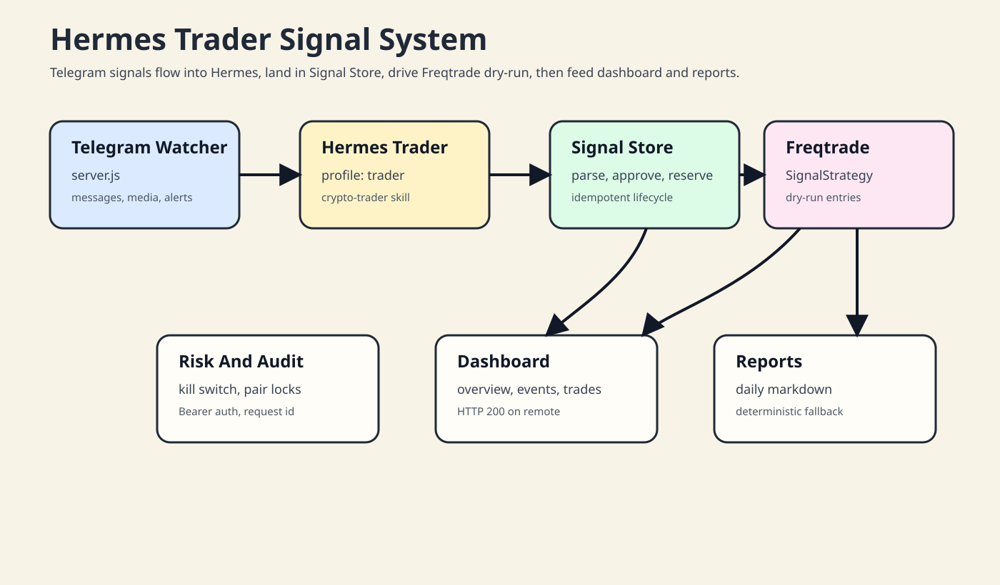
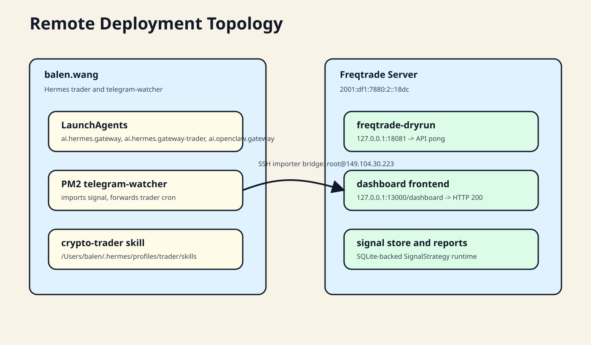
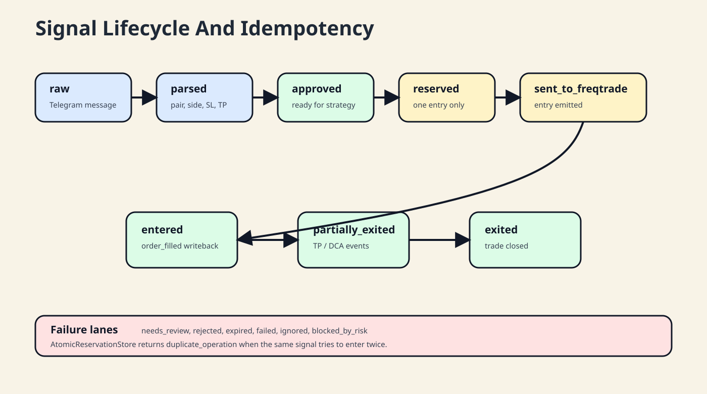
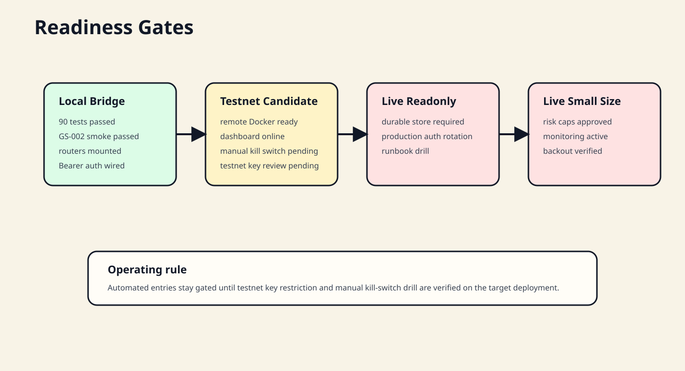

1. 系统总览
Telegram watcher 捕获交易信号和媒体，Hermes trader 负责交易上下文与策略调度，Signal Store 承接解析、审批、预留和生命周期，Freqtrade 的 SignalStrategy 读取已审批信号并在 dry-run 中发出入场、止盈、DCA 和成交回写。

2. 关键路径
Hermes / Trader 主机
balen.wang 承载 Hermes gateway、trader profile、OpenClaw gateway 和 telegram-watcher。
/Users/balen/.hermes/hermes-agent
/Users/balen/.hermes/config.yaml
/Users/balen/.hermes/profiles/trader/config.yaml
/Users/balen/git/telegram-watcherFreqtrade 主机
2001:df1:7880:2::18dc 承载 SignalStrategy、Signal Store、dashboard frontend 和 dry-run API。
/root/freqtrade
docker/docker-compose-signal-dashboard.yml
user_data/strategies/SignalStrategy.py
freqtrade/signal_strategy/
root@149.104.30.223，运维入口保留 IPv6。3. 信号生命周期
生命周期由状态机保护：同一个 signal_id 只允许一次 entry reservation。重复 bot loop 会得到 duplicate_operation 或看不到已发送信号，从而避免重复交易。

| 阶段 | 职责 | 验证 |
|---|---|---|
| 解析 | 识别 pair、side、entry、SL、TP、leverage | GS-002/003/005 golden tests |
| 审批 | 人工或策略确认信号可进入交易 | SignalStore.list_approved |
| 预留 | 原子 reservation 防重复入场 | 20 并发只 1 个成功 |
| 执行 | SignalStrategy 发出 long/short、stake、leverage、stoploss | strategy core tests |
| 回写 | order_filled 写入 entered 和 trade_id | GS-002 dry-run smoke |
4. API 和界面
Bridge app 挂载了信号、dashboard、reports、risk、audit、security 和 release-gates。受保护接口使用 Bearer token scaffold，并通过 request-id middleware 传播请求 ID。
GET /healthz
GET /api/signals/status
GET /api/dashboard/overview
GET /api/reports/daily/{date}/markdown
GET /api/risk/overview
GET /api/audit/events
POST /api/security/scan-report
GET /api/release-gates/statushttp://127.0.0.1:13000/dashboard 返回 HTTP 200；Freqtrade dry-run API /api/v1/ping 返回 {"status":"pong"}；系统说明页 /system/hermes-trader-system.html 返回 HTTP 200。5. 部署和运维
| 动作 | 命令 |
|---|---|
| 连接 Hermes 主机 | ssh -o AddressFamily=inet6 balen@balen.wang |
| 连接 Freqtrade 主机 | ssh -6 root@2001:df1:7880:2::18dc |
| 查看 Freqtrade 栈 | docker compose --env-file .env.signal-dashboard -f docker/docker-compose-signal-dashboard.yml ps |
| 检查 dry-run API | curl http://127.0.0.1:18081/api/v1/ping |
| 检查 Dashboard | curl -I http://127.0.0.1:13000/dashboard |
telegram-watcher importer 当前环境变量：SIGNAL_IMPORTER_ENABLED=1、SIGNAL_IMPORTER_REMOTE_HOST=root@149.104.30.223、SIGNAL_IMPORTER_REMOTE_CWD=/root/freqtrade、SIGNAL_IMPORTER_SSH_IPV6=0、HERMES_SIGNAL_STORE_URL=sqlite:////root/freqtrade/user_data/signal_strategy.sqlite3。
codex-smoke 信号状态为 needs_review，返回 {"approved":0,"needs_review":1,"rejected":0,"total":1}。6. 门禁状态

- 自动化测试、API E2E、安全测试、GS-002 full-system smoke 已通过。
- Freqtrade API loopback-only compose 绑定已验证。
- Bearer token auth scaffold 已替换测试 actor headers。
- kill-switch manual acceptance 等待目标部署操作。
- exchange API key testnet-only review 等待目标部署凭证核验。